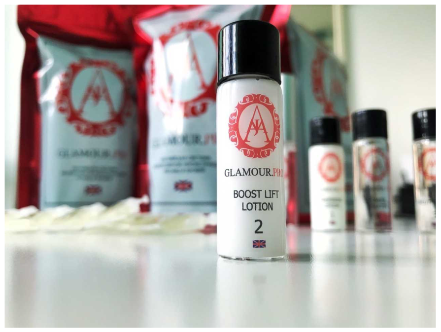

Glamour PRO это новейшая высокотехнологичная процедура молекулярной реконструкции натуральных ресниц, созданная английскими
ПРОЦЕДУРА GLAMOUR PRO
НАБОРЫ И СОСТАВЫ Составы продуктов марки GLAMOUR PRO
Preparing Lotion № 1
очищающий состав, подготавливающий волосок к последующей реконструкции – 8 мл. – 1 шт. (Aqua, cetearyl alcohol, ammonium hydroxide, ammonium thioglycolate, sodium hydrosulfite, phenoxyethenol, chamomile flower extract, polyquatemium-7, propylene glycol, tetrasodum EDTA, Linalool, Methylparabe, hyaluronic acid , parfum)
Boost Lift lotion №2
специальный лосьон, заполняющий волос, фикси рующий завиток и лифтинг от корня – 8 мл. – 1 шт. (Aqua, aloe barbadensis gel, hydrogen peroxide, etidronic acid, PEG 60 Hydrogenated Castor Oil, cetrimonium chloride, tetrasodum EDTA, propylene glycol dicaprylate, Propylparaben, hyaluronic acid, citric acid)
Neutralizer № 3
уникальный состав, не имеющий аналогов. Очищает всю поверхность волоса от химических составов предыдущих этапов процедуры, что пол ностью исключает непредсказуемый результат. - 8 мл. – 1 шт. (Aqua, citric acid, propylene glycol, ethylparabe, urea, hyaluronic acid)
Power Keratin №4
мощнейший комплекс питальных и увлажняющих ком понентов, микро- и макроэлементов и витаминов. Насы щает и полностью восстанавливает структуру волоса. – 8 мл. – 1 шт. (Disiloxane, Hydrolyzed Keratine, Alkyl Benzoate, cyclopentasiloxane,Tocopheryl, Limonene, Linalool, Hydrolyzed Silk, GH complex: hyaluronic acid, peptides; Parfum, Titanium Dioxide)
Glue
8 мл. (Purified Water, Polyvinyl Alcohol, Glycerin, AMP /Acrylate And Methacrylates, PEG 60 Hydrogenated Castor Oil, Argan oil, Methyl Paraben)
Energy Refill
энергетическая заправка для ваших ресниц и бровей. Уникальная формула форм и пропорций обогащенных масел и витаминов обеспечат дополнительное питание и обеспечат качественный и активный рост. Рекомендова на в качестве домашнего ухода. — 30 мл, 1,5 мл. ( almond oil, grape seed oil, chamomile extract, castor oil, arga noil, vitamin E (tocopherol acetate), vitamin a (retinol acetate))
Активная сыворотка
1,8 % Нyaluronic acid 30 мл., 1,5 мл.(Aqua, Нyaluronic acid)
ОБУЧЕНИЯ
И СЕРТИФИКАЦИЯ
Начни свою историю успеха вместе с Glamour PRO. Присоединись к команде международных профессионалов и стань МАСТЕРОМ инновационной услуги в области ухода и эстетического преображения ресниц и кровей. Получи профессию Лейшмекер-это модно,выгодно, престижно,быстро. Индивидуальное обучение!
Курсы «Реконструкции ресниц и бровей Glamour pro» проводятся согласно международному формату обучения. Диплом ACADEMY STANDART международного европейского образца имеет вес и статус,так как находясь в Лондоне, компания аффилирована(т.е. включена) в международное профессиональное сообщество и соответствует его требованиям,европейские учебные программы,строгий контроль качества обучения и обязательная профессиональная аттестация преподавателей. Сертификат имеет номер мастера, прошедшие обучение и подтверждающие свою квалификацию, размещаются на сайте компании. Каждому мастеру присваивается индификационный номер,который заносится в международную базу мастеров Glamour pro.
Также есть озможность стать представителем в своем городе.
Узнать большеНАБОР Glamour pro
рассчитан на 40 процедур
СОСТАВ:
Lotion № 1 ‒ 8 мл - 1 шт
Boost Lift lotion № 2 - 8 мл - 1 шт
Neutralizer № 3 - 8 мл - 1 шт
Power Keratin № 4 - 8 мл - 1 шт
Glue (клей)
Energy Refill
Валики силиконовые S/M/L (набор для каждого типа ресниц)
Все материалы, используемые в процедуре имеют 100%
натуральный состав, не содержат спиртовых основ,
силикона и аллергенов
НАБОР Glamour pro
рассчитан на 40 процедур
СОСТАВ:
Lotion № 1 ‒ 8 мл - 1 шт
Boost Lift lotion № 2 - 8 мл - 1 шт
Neutralizer № 3 - 8 мл - 1 шт
Power Keratin № 4 - 8 мл - 1 шт
Glue (клей)
Energy Refill
Валики силиконовые S/M/L (набор для каждого типа ресниц)
Все материалы, используемые в процедуре имеют 100%
натуральный состав, не содержат спиртовых основ,
силикона и аллергенов
ОБУЧЕНИЕ
И СЕРТИФИКАЦИЯ
МАСТЕР Glamour Pro
Курсы «Реконструкции ресниц и бровей Glamour pro» проводятся согласно международному формату обучения. Диплом ACADEMY STANDART международного европейского образца имеет вес и статус,так как находясь в Лондоне, компания аффилирована(т.е. включена) вмеждународное профессиональное сообщество и соответствует его требованиям,европейские учебные программы,строгий контроль качества обучения и обязательная профессиональная аттестация преподавателей. Сертификат имеет номер мастера, прошедшие обучение и подтверждающие свою квалификациюразмещаются на сайте компании. Каждому мастеру присваивается индификационный номер,который заносится в международную базу мастеров Glamour pro.
После курса Вы сможете работать на VIP услуге, предлагая вашим клиентам самое лучшее.
- Универсальная процедура. Удобная стильная упаковка . Составы поставляются в удобныработе, транспортировке и хранении флаконах, которые герметично закрываются, снижая риск испарения активных веществ;при правильном использовании составы в рабочем состоянии допоследней капли
- Расходники. В набор Glamour PRO уже входит специальный фиксирующий гель для валиков и ресниц, что позволяет вам сэкономить еще больше;
- Производственный контроль. Учебная программа максимально приспособлена для быстрого и емкого усвоения материала Все возникающие вопросы по работе с натуральными ресницами уже учтены и снабжены ответами в учебной программе;
- Обратная свіязь. Каждый мастер будет чувствовать себя уверенно и всегда получит необходимую поддержку и консультацию от специалиста;
- Клинически протестирован. Продукт обеспечен научными исследованиями и клиническими испытаниями. Препараты протестированы на гипоаллергенность;
- Готовая модель бизнеса. Хотите поменять что-то в жизни, заниматься любимым делом и получать стабильный доход? Профессия мастер реконструкции ресниц Glamour PRO сделает Ваши мечты реальностью. При этом совершенно не имеет значения ни Ваш возраст, ни Ваше социальное положение. Свой бизнес Вы можете развернуть в любой точке Мы подскажем как!
УЧЕБНЫЙ КУРС
ВОЗМОЖЕН
В НЕСКОЛЬКИХ ФОРМАТАХ:
БАЗОВОЕ ИНДИВИДУАЛЬНОЕ ОБУЧЕНИЕ
(насыщенный теоретический блок + отработка на 2х моделях) 5 часов
Насыщенный ЕМКИЙ курс ,без воды, все ЧЕТКО, ЯСНО и ПОНЯТНО
- теоретический блок
- современные тенденции в работе с ресничками
- правила работы с клиентом
- работа с валиком (как правильно подобрать и быстро закрепить, в каких случаях не используем
- клей для прикрепления Вадика к верхнему веку
- правила выкладки ресниц на валик.
- моделирование ресниц : создание различных эффектов путем использования техник нанесения составов.
- секреты идеального завитка, методы выкладки, для создания различных эффектов
- моделирование бровей:быстрое построение эскиза
- использование хны в работе лейшмекера
- отработка на модели ресницы и брови или 2 модели ресницы(на выбор)
- Botox В работе лейшмекера
- маркетинг
БАЗОВОЕ ‒ LIGHT-
ОБУЧЕНИЕ
ОБУЧЕНИЕ (теоретический блог + отработка на 1й модели)
4 часа. МЕТОДИЧЕСКИЕ РЕКОМЕНДАЦИИ без отработки на модели ,для действующих мастеров с опытом работы,уверенных в своем мастерстве,+-покупка препаратов.
МАСТЕР – КЛАСС
с отработкой на модели
2,5 часа (для действующих мастеров ламинирования ресниц и биозавивки),задаем и получаем ответ на любой вопрос
МАСТЕР – КЛАСС
повышение квалификации, с отработкой на модели
повышение квалификации, с отработкой на модели - 4 часа (для действующих мастеров ламинирования ресниц и биозавивки).
МОДЕЛИРОВАНИЕ
создание различных эффектов путем использования техник нанесения составов. Правила выкладки ресниц на валик.СЕКРЕТЫ ИДЕАЛЬНОГО ЗАВИТКА.
Для бровистов
МАСТЕР – КЛАСС
с отработкой на модели
МАСТЕР – КЛАСС с отработкой на модели (для действующих мастеров,работающих с бровями).
Мастера
реконструкции ресниц

- Оказывают услугу реконструкции ресниц и бровей Glamour pro;
- Разрешение на использование бренда Glamour pro Academia Standart в продвижении оказываемых услуг Английской системы реконструкции ресниц и бровей
- Получают маркетинговую поддержку
- Мастера получают международный диплом Glamour Pro и ID с занесением в международный реестр специалистов реконструкции ресниц и бровей, а так же размещение информации о мастере на сайте и в наших соц.сетях
ОТ МАСТЕРА ДО ТРЕНЕРА
Glamour Pro L&B
Возможность стать представителем в своем городе Glamour PRO и ACADEMY STANDART, предлагает совершенно новый подход к развитию Вашей карьеры в индустрии красоты.
- У Вас есть уникальный шанс стать ПРЕДСТАВИТЕЛЕМ компании Glamour Pro в своем городе - это лучшая инвестиция в свой профессиональный рост и развитие, а также возможность начать свой ПРИБЫЛЬНЫЙ ПЕРСПЕКТИВНЫЙ БИЗНЕС
- Что дает статус представителя?
- Право на преподавание курсов "Реконструкция Glamour Pro L&B" с выдачей международных сертификатов;
- Приобретение продукции Glamour Pro L&B на выгодных условиях. Для представителей действует скидочно-бонусная система суммарно до 40%; Возможность заниматься любимым делом и развиваться в lash&brow-индустрии.
- Ежеквартальное повышение квалификации с дополнительными возможностями;
- Неограниченный доход (обучение + продажа материала).
- Стоимость курсов Вы устанавливаете самостоятельно, исходя из среднего уровня цен в регионе;
- Стоимость материалов фиксированна
- Рекламная и информационная поддержка торговой марки Glamour Pro в вашем городе.
- Более подробная информация у ианшего менеджера +380505804090
- Успей вступить в международную команду профессионалов Glamour Pro L&B!
- Glamour PRO - это уникальный продукт и упакованная модель бизнеса для Вас.
Покупая Glamor PRO
Вы получаете:
- Английскую систему молекулярной реконструкции Glamour PRO на 40 клиентов
- Обучение по европейскому стандарту , учебное пособие
- Диплом ACADEMY STANDART , LONDON с занесением в международный реестр специалистов реконструкции ресниц и бровей
- Маркетинговые материалы для оформления своей студии дизайна взгляда, право использовать торговый знак ACADEMY STANDART, LONDON
- Возможность обучать дилеров Glamor PRO с правом преподавания от ACADEMY STANDART, LONDON
- Специальные условия закупа на продукцию Glamour PRO
- Зарабатывайте на предоставлении услуг клиентам, обучая студентов и продавая продукт европейского качества Glamour PRO.